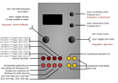

Harrington 1200

Inputs and outputs
| I/O | Function |
|---|---|
| TR1 | Reset to root triad |
| TR2 | P transform (if Trigger type is PLR), or N transform (if Trigger type is NSH), or clock input (if Trigger type is Eucl) |
| TR3 | L transform (if Trigger type is PLR), or S transform (if Trigger type is NSH), or clock input (if Trigger type is Eucl) |
| TR4 | R transform (if Trigger type is PLR), or H transform (if Trigger type is NSH), or clock input (if Trigger type is Eucl) |
| CV1 | Mapped according to Transpose CV, Octave CV, Inversion CV, PLR Prior CV and NSH Prior CV settings (see table above), as well as according to the Eucl CV1 map, Eucl CV2 map, Eucl CV3 map and Eucl CV4 map settings (see below) - each CV input can be used for multiple internal destinations. |
| CV2 | Ditto |
| CV3 | Ditto |
| CV4 | Ditto |
| A | Quantised root |
| B, C, D | Transformed & inverted triad (also quantised) |
Controls
| Control | Function |
|---|---|
| Left encoder (turn) | Root note transpose up or down |
| Left encoder (press) | Toggle display of note numbers (semitone offsets from the root note) or names (note: the names are the simplest possible mapping, thus there are no enharmonic substitutions) |
| Left encoder (long press) | Reset to defaults |
| Right encoder (turn) | Navigation mode: move up and down through the menu items. Edit mode: increase or decrease the value being edited. |
| Right encoder (press) | Toggle between menu navigation (selection) mode and value editing mode |
| Right encoder (long press) | App selection menu |
| Up button (long press) | Invoke screensaver display |
| Up button (press) | Increment chord inversion by 1 |
| Down button (press) | Decrement chord inversion by 1 |
Settings
| Setting | Meaning |
|---|---|
Transpose |
Shift root/triad in semitones, range -24 to 24 (i.e. two octaves up or down) |
Transpose CV |
Selects CV input used to shift root/triad in semitones, up (positive voltages up to about 6.5V) or down (negative voltages down to about -3.5V). Transposition should be scaled at 1V/octave. Choices are None, CV1, CV2, CV3, CV4. |
Octave |
Shift root/triad in octaves, range -3 to 3. |
Octave CV |
Selects CV input used to shift root/triad in semitones, up (positive voltages up to about 6.5V) or down (negative voltages down to about -3.5V). Scaling is not 1V/octave. Choices are None, CV1, CV2, CV3, CV4. |
Root mode |
Mode of root triad, either maj or min |
Inversion |
Chord inversion, range is from -3 to 3. |
Inversion CV |
Selects CV input used to shift the chord inversion, up (positive voltages up to about 6.5V) or down (negative voltages down to about -3.5V). Choices are None, CV1, CV2, CV3, CV4. |
PLR Priority |
Order in which the P, L and R transforms are applied if multiple triggers on TR2, TR3 and TR4 are received simultaneously |
PLR Prior CV |
Selects CV input used to shift the PLR priority amongst the available choices, up (positive voltages up to about 6.5V) or down (negative voltages down to about -3.5V). Choices are None, CV1, CV2, CV3, CV4. |
NSH Priority |
Order in which the N, S and H transforms are applied if multiple triggers on TR2, TR3 and TR4 are received simultaneously |
NSH Prior CV |
Selects CV input used to shift the NSH priority amongst the available choices, up (positive voltages up to about 6.5V) or down (negative voltages down to about -3.5V). Choices are None, CV1, CV2, CV3, CV4. |
CV sampling |
Selects how sampling of CV1, CV2, CV3 and CV4 inputs is done: either continuously (Cont) or on a sample-and-hold basis (Trig) which is triggered by a trigger on any or all of the four trigger inputs. |
Output mode |
Output mode, with the default being chord, or use tune to output the quantised root on all four output channels |
Trigger type |
Sets the trigger behaviour, either P. L and R transforms triggered by trigger inputs on TR2, TR3 and TR4 respectively, or N, S or H transforms, also triggered bt TR2, TR3 or TR4 respectively, or Eucl, which enable Euclidean trigger masks - see below for details. |
Trigger delay |
sets the TR1-input-to-processing latency (for details see the setting with the same name in Quantermain below) |
This is a relatively straight-forward implementation of neo-Riemannian transformations for generating triad (three note chord) progressions (see the acknowledgements section for more details on neo-Riemannian music theory).
- In settings mode, the top line of the display shows, from left to right:
- the current root note for the root (initial) chord
- the musicological mode (major or minor) for the root chord
- the three notes comprising the current triad being output. Clicking on the left encoder toggles between note display and display of semitone offset from the root note.
-
The root note can be changed using the
Transposesetting in the menu. The left encoder can also be used to change this setting at any time (such as during live performance). The voltage input on CV1 also changes the root note (i.e. the transposition). -
The musicological mode of the root chord is set by
Root modein the menu to either major or minor. Chord inversion is similarly set using theInversionmenu item. Note that these settings are not immediate - they will take effect when the next transformation trigger input is received. The top line of the display indicates the current triad, not the current menu settings for these parameters. Note that the voltage input on CV4 also changes the inversion. -
The pitch voltage (scaled to 1V/octave) for the root note appears on output A. The pitch voltages for the three notes of the current triad appear on outputs B, C and D. Thus, to pproduce chords, you should feed the B, C and D outputs into the 1V/octave pitch inputs of three VCOs.
-
Trigger inputs TR2, TR3 and TR4 are used to apply the atomic P, L or R transformations, or the compound N, S or H transformations (see below), depending on the
Trigger typesetting. Trigger input TR1 resets the current triad back to the root chord for all settings ofTrigger type1. -
If multiple triggers are received, the reset input (TR1) always has priority, then all triggered transforms are applied. The order in which they are applied can be set in the menu by the
PLR PriorityandNHS Prioritysettings. -
The neo-Riemannian transformations themselves are quite simple, and “reversible” i.e. applying them twice returns the original triad. The following basic (atomic) tranformations are provided:
- P (Parallel): Moves the third up or down a semitone, thus P(Cmaj) = Cmin, P(Cmin) = Cmaj.
- L (Leittonwechsel): Converts a major triad to a minor by shifting the root down a semitone and making the third the root, or from minor to major by moving the fifth up a semitone to become the root.
- R (Relativ): Converts a major triad to its relative minor, or a minor triad to its relative major.
-
Alternatively, secondary transformations can be used:
- N (Nebenverwandt): Exchanges a major triad for its minor subdominant, and a minor triad for its major dominant (e.g. C major and F minor). The “N” transformation is the same as applying R, L, and P successively.
- S (Slide): Exchanges two triads that share a third (e.g. C major and C♯ minor); it is the same as applying L, P, and R successively, in that order.
- H (Hexatonic): Exchanges a triad for its hexatonic pole (e.g. C major and A♭ minor); it is the same as applying L, P and L transformations successively.
-
The implementation computes these N, S and H transformations in a single step however, not sequentially.
-
Note that in trigger modes
PLRandNSH, only PLR or NSH transformations can be applied, but not mixtures of both. However, inEucl(Euclidean) trigger mode (see below), mixtures of both PLR atomic transformations and NSH secondary or compound transformations can be applied. - Internally, the triad is stored in a neutral form (basically just offsets), thus the chord voicing is preserved and can be shifted easily to the quantised root note, and inversions created on-the-fly. For an alternate way of implementing these transformations, see the documentation of the Tonnetz Sequent.
Screensaver display
The current triad (output as pitch CVs on the B, C and D sockets) is shown graphically on the left. The circumference of the circle has 12 points on it, one point for each semitone in an octave, with C at the 12 o’clock position. The current triad is indicated by the three dots, joined to form a triangle. The middle section of the screensaver display shows the last four transformations applied, with the most recent one at the top. The rightmost section indicated the current triad being output, with numbers showing the octave for each note.
Tip: for a pretty display, patch the output of an LFO into CV1 in order to rapidly rotate the root note up and down.
Euclidean trigger masks
Euclidean trigger mask mode in the Harrington 1200 app is enabled by setting the Trigger type setting to Eucl. Twenty-two additional settings will appear in the menu when the Eucl trigger type is selected. In this mode, a simple, single, regular clock input can be used (into TR2, TR3 or TR4) to trigger P, L, R, N, S or H chord transformations. Each of the six transformation types has its own “Euclidean mask” or “Euclidean filter” — by varying the parameters on each of these for each transformation type, very complex “polyrhythms” of chord transformations can be derived from as single regular clock input. Furthermore, all of the Euclidean trigger mask parameters, for each transformation type, can be placed under external voltage control. This permits external voltages to influence complex, evolving patterns of chord transformations driven by a single external clock.
Each type of transformation (P, L, R, N, S and H) has three settings controlling the Euclidean trigger mask (Euclidean filter) for it (thus 18 controls all together): the length of the Euclidean pattern (named X EuLeng, where X is the type of transformation, one of P, L, R, N, S or H), the fill amount (X EuFill) for that length of pattern, and the offset or rotation (X EuOffs) of the pattern. These all operate in the same way as the Euclidean trigger filters for the envelope generators in the Piqued app operate - see the discussion in the Piqued section for further details.
The settings Eucl CV1 map through to Eucl CV4 map permit the four external voltage inputs to be mapped to four of the 18 available Euclidean trigger mask settings. The same input voltages can also be used to simultaneous control transposition, octave, inversion and trigger priorities (see above), if desired.
Tips
Try using a rhythm generator, such as the Mutable Instruments Grids module, or the ALM/Busy Circuits Pamela’s Workout module, or the Rebel Technology Stoicheia module, or some combination of clock division and logic modules, or even a second o_C module running the Piqued app with Euclidean trigger filters engaged, to trigger the P, L and R transformations (via trigger inputs TR2, TR3 and TR4) in varying patterns to create a variety of chord progressions that may or may not be musically pleasing, or interesting, or horrifying.
Update: in v1.2, you can use the built-in Euclidean trigger masks to achieve the same thing, and more, with just a single external regular clock input (into TR2, TR3 or TR4).